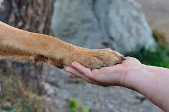
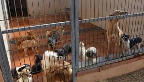

Acerca de la adopción
Aquí podrás ver los tipos de animales de los que nos hacemos cargo, características, raza y si está
en adopción.
Un animal en caso de que no esté en adopción, significa que todavía está recuperándose de algún
tratamiento, por lo que hasta que no mejore, no podrá ser adoptado.
Adoptar un animal es gratis! Pero siempre y cuando se tenga constancia de una serie de obligaciones
y derechos que han de ser de obligado cumplimiento.
Al adoptar a tu mascota, habrá que suplir una parte de los costes en la mascota a adoptar. Dichos
gastos hacen referencia a vacunas, pipetas y demás. De igual manera se agradecerá una donación por
cuestiones como pienso, juguetes, etc.
Y recuerda... ADOPTA, NO COMPRES. Miles de animales mueren todos los días en perreras porque no
tienen más capacidad para albergarlos y necesitan liberarse de algunos, está en nuestras manos
ayudarlos.
